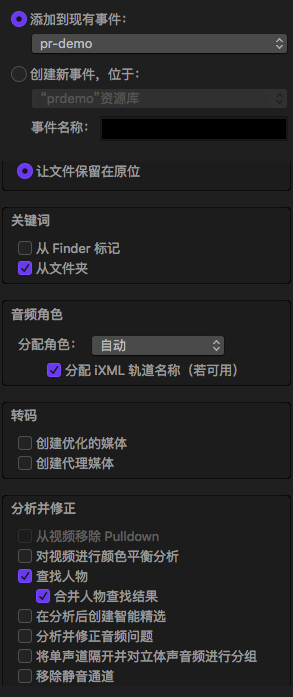
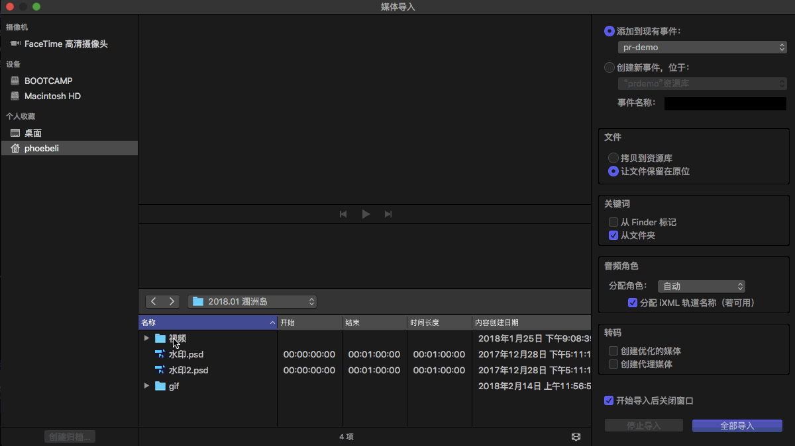
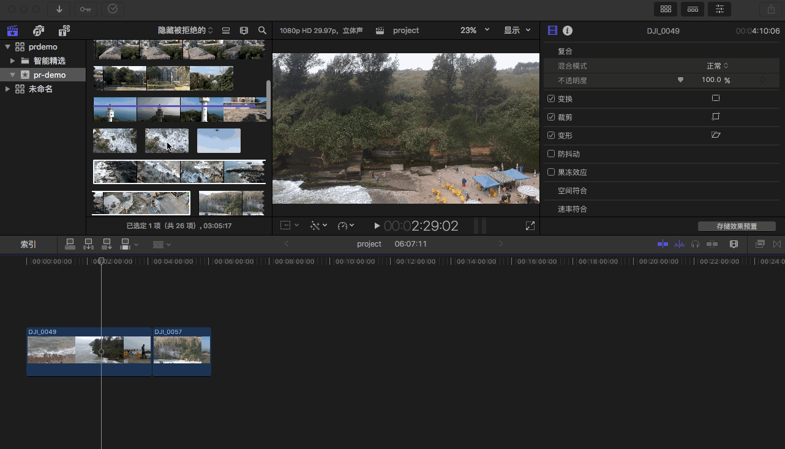
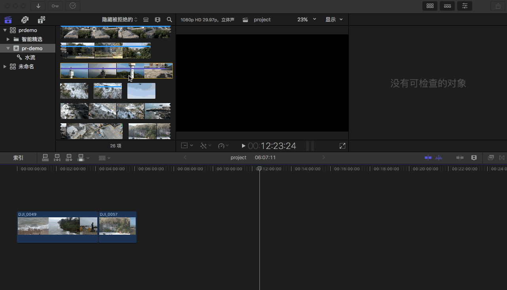

资源库导入
选择“文件－新建－资源库”左侧会自动生成一个日期目录，双击重命名。
快捷键：cmd+i
右键 － 导入媒体 （或在主界面上点击“导入媒体”）。按下 S 键可对视频进行预览。
右侧设置：

如何设定个人收藏
个人收藏用于快速定位到常用的用于存放视频资源的文件夹

资源库整理：评级与智能筛选
关键词
快捷键：cmd+k
关键词即视频素材的标签、归类。在资源库导入时，可以选择关键词为“从 Finder 标记”或“从文件夹”。导入视频以后，可通过左上角的钥匙标志进行关键词的二次设定。
展开后可设定各关键词的快捷键。
快捷键：ctrl+1~0
通过数字可以快速定位到标号为 n 的关键词。

筛选与分级
F 键（Favorite）加到喜爱的目录。选择视频 － 按下 F 键，然后在左侧的智能精选 － 个人收藏中可以看到该视频已经在个人收藏中。
